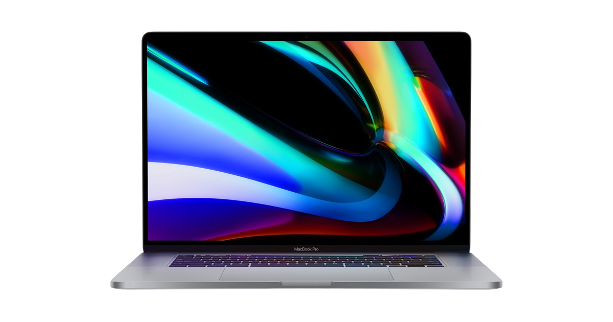
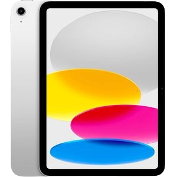
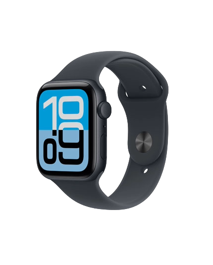
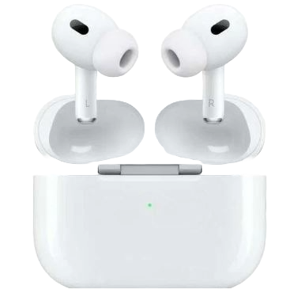
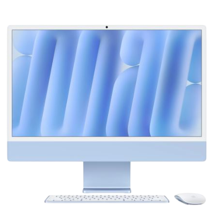
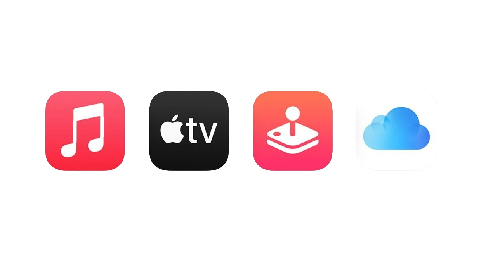

Šira ponuda kompanije Apple
Pored iPhone uređaja, Apple razvija i druge proizvode koji imaju važnu ulogu u svakodnevnom radu, učenju, komunikaciji i zabavi. Svaki proizvod ima posebnu namenu i usmeren je ka određenom tipu korisnika.
MacBook je povezan sa produktivnošću, iPad sa prenosivošću i kreativnošću, Apple Watch sa organizacijom i aktivnostima, dok AirPods i Apple usluge dopunjuju svakodnevno korišćenje tehnologije.

MacBook
MacBook računari namenjeni su učenju, radu, programiranju, dizajnu i kreativnim poslovima. Prepoznatljivi su po kvalitetnoj izradi, dugom trajanju baterije i jednostavnom macOS sistemu.

iPad
iPad je tablet uređaj koji se koristi za učenje, crtanje, gledanje sadržaja, beleške i rad u pokretu. Uz dodatke kao što su tastatura i olovka, može biti vrlo praktičan alat.

Apple Watch
Apple Watch je pametni sat koji se koristi za obaveštenja, trening, praćenje aktivnosti i svakodnevnu organizaciju. Posebno je koristan kada je povezan sa iPhone uređajem.

AirPods
AirPods su bežične slušalice poznate po jednostavnom povezivanju, kvalitetnom zvuku i praktičnosti. Lako se koriste sa iPhone-om, Mac-om, iPad-om i drugim Apple uređajima.

iMac
iMac je desktop računar prepoznatljiv po ekranu i računaru spojenim u jedno kućište. Namenjen je korisnicima koji žele uredan radni prostor i snažan računar za svakodnevni rad.

Apple usluge
Apple razvija i digitalne usluge kao što su iCloud, Apple Music, App Store i Apple TV+. Ove usluge dopunjuju uređaje i čine korišćenje tehnologije jednostavnijim.
Kratak pregled proizvoda
| Proizvod | Namena | Prednost |
|---|---|---|
| MacBook | Rad, škola, programiranje | Duga baterija i kvalitetna izrada |
| iPad | Učenje, crtanje, zabava | Lagan i prenosiv uređaj |
| Apple Watch | Aktivnosti i obaveštenja | Praktičan za organizaciju dana |
| AirPods | Slušanje muzike i pozivi | Jednostavno povezivanje |
| iMac | Radni prostor i kreativni rad | Računar i ekran u jednom uređaju |
| Apple usluge | Podaci, muzika, aplikacije i sadržaj | Dopunjuju korišćenje uređaja |
Zašto su ovi proizvodi važni za brend?
Ovi proizvodi pokazuju da Apple nije vezan samo za jedan uređaj ili jednu grupu korisnika. Kompanija pokušava da bude prisutna u različitim delovima digitalnog života: od rada i učenja, do zabave, komunikacije i čuvanja podataka.
Zbog toga Apple brend ostavlja utisak celovitosti. Korisnik ne vidi samo pojedinačan proizvod, već prepoznatljiv stil, kvalitet izrade, pažnju prema detaljima i dosledan način predstavljanja tehnologije.